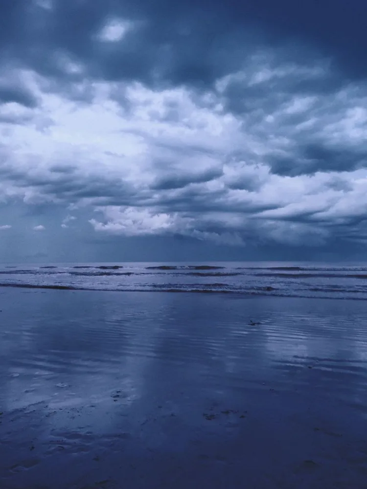
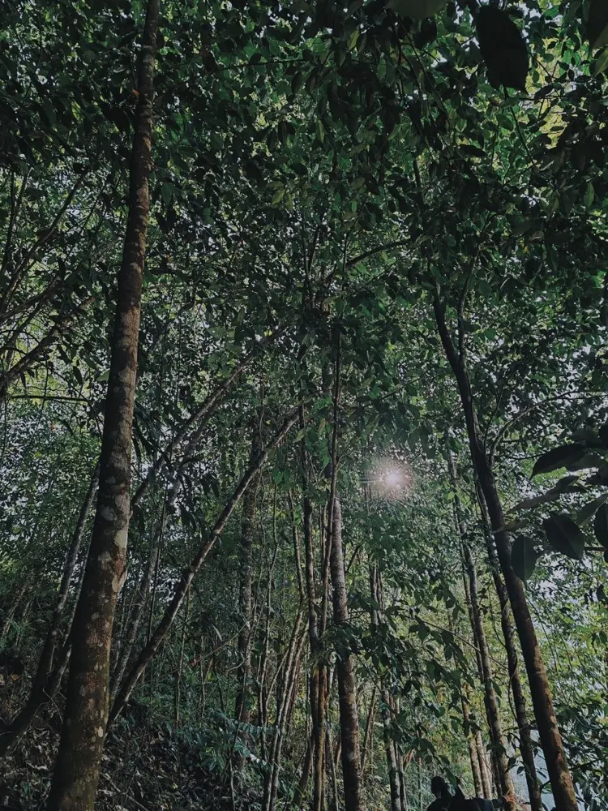
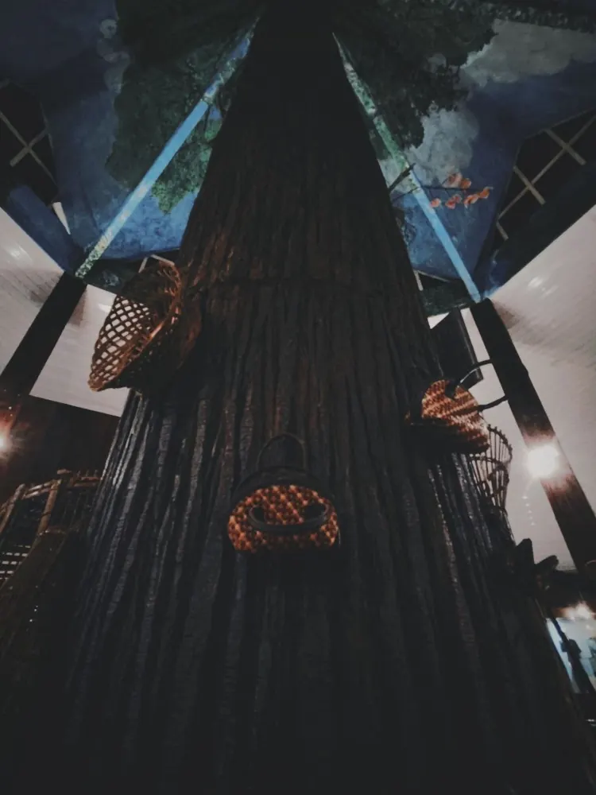
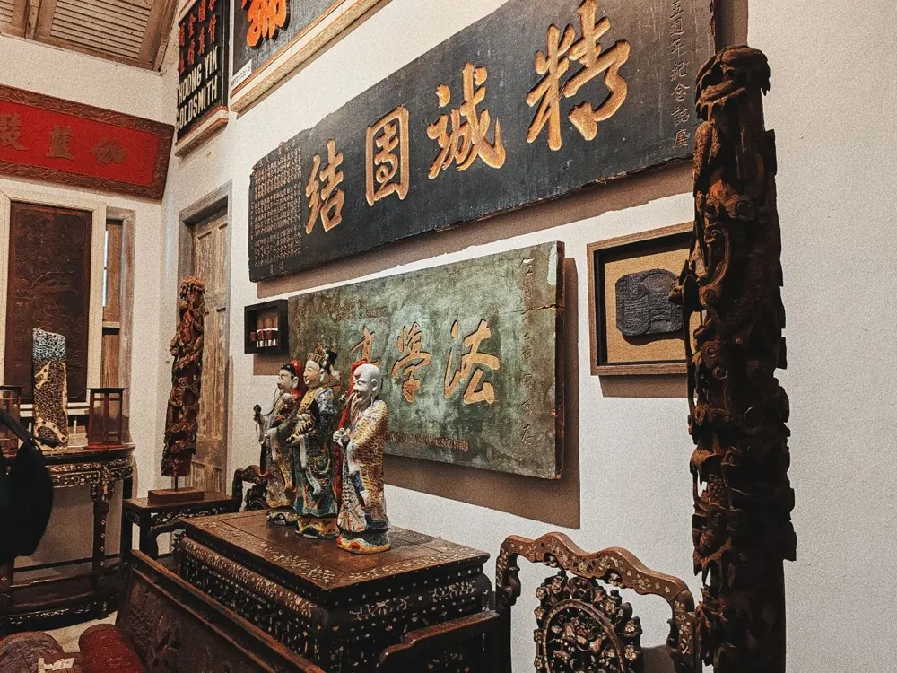
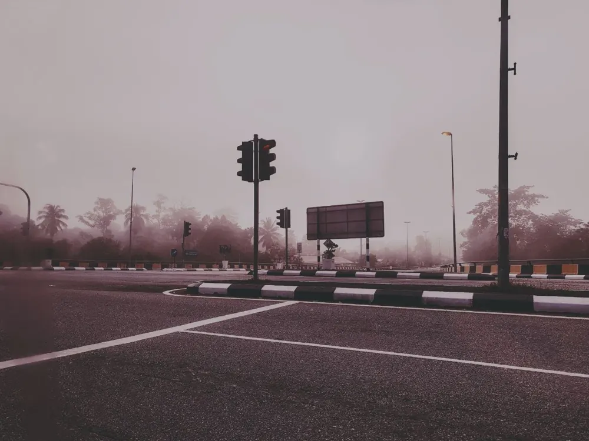

夕色與彩虹
#141717
#B26C59
#C47761
#C58566
#57312B



從天空、自然到建築與人物，記錄讓我停下來的畫面。








從作品畫面提取色票，記錄不同光線與氣氛的配色。

以多畫面編排，連起途中遇見的環境與人。
城市、樹林、海岸與人物在同一段旅程裡交替出現。這是我對旅行影像編排的一次練習。
從喜愛的舞台影像出發，練習鏡頭選擇與文字編排。
遠景、近景與不同光線，構成一支以人物為中心的偶像剪輯。
以偶像影像為素材的個人視覺創作，從黑白桌布到彩色拼貼。


創作方向 · 持續探索
我想用照片、影片與設計，記錄人物、日常、旅行、自然與音樂，把喜歡的事物和感受變成自己的作品。
留意光線、色彩與生活中的小細節。
從人物、音樂與風景裡找到情緒和靈感。
用畫面、聲音與節奏串起不同片段。
透過剪輯、拼貼與排版，呈現自己的視角。
無論是攝影、影像剪輯、視覺設計，或一個還在成形的點子，都歡迎傳訊息給我。簡單介紹你的想法，我們就可以從這裡開始。
透過 Instagram 聯絡我我是 Tarynn Lee，來自馬來西亞。喜歡攝影、音樂、視覺排版，以及把生活裡的小片段變成作品。